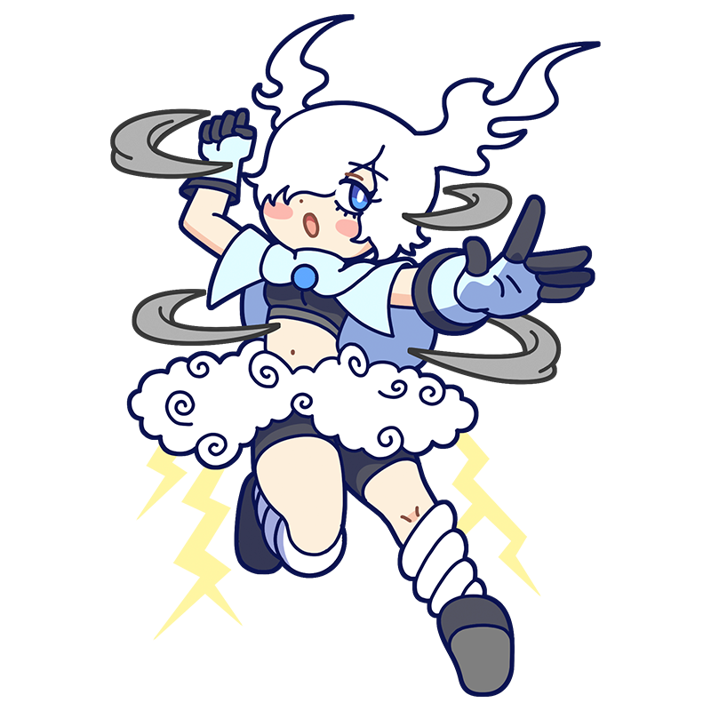

嵐の力を浴びてみろッ！
うおおおおっ、ムダムダァ！
ジョルジョーネ
うなれ稲妻、呼べよ嵐
謎めく風が吹き荒れる
ルネサンス期に活躍した、嵐の力をまとうミューズ。凄まじい暴風雨とともに現れ、あたりをひとしきり吹っ飛ばすと満足して帰っていく。本人もエネルギッシュで、一度動き出すと誰にも止められない。
様式
ルネサンス
出身国
イタリア
代表作
- 『嵐』
- 『老女 (ラ・ヴェッキア)』
- 『ユディト』など
ジョルジョーネといえばこの一枚！
嵐(ラ・テンペスタ)
数少ないジョルジョーネの現存作品の中でも特に有名な一枚。ジプシー女が授乳する姿を、ひとりの兵士が見つめている。主題は明確でなく、現在もさまざまな解釈がなされる謎めいた作品であるが、奥に描かれた荒れた天候から『嵐』と呼ばれるのが一般的。当時としては珍しく人物よりも風景に焦点を当てており、初期の風景画として扱われることもある。
制作年
1508年ごろ
技法・材質
油彩、キャンバス
寸法
83 cm x 73 cm
所蔵
アカデミア美術館
(イタリア)
作品画像出典: https://commons.wikimedia.org/wiki/File:Giorgione,_The_tempest.jpg
ジョルジョーネってどんな芸術家？
ジョルジョーネ
盛期ルネサンス期にヴェネツィアで活動していたイタリアの画家。作品も記録もほとんど残っておらず、生涯には謎が多い。しかし真作とされる作品には独特の詩情と味わいがあり、同時代の伝記が伝えるように優れた画家であったことがうかがえる。同じくルネサンス期ヴェネツィアの画家、ティツィアーノをはじめとする後続の画家にも大きな影響を与えたが、作風が似ているため、どちらの作品なのか判別が難しい絵も少なくない。
フルネーム
Giorgio Barbarelli da Castelfranco
誕生
1478年頃
死没
1510年9月17日(???歳没)